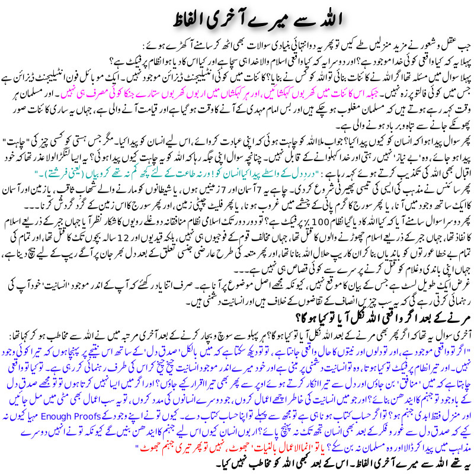

")

جب عقل و شعور نے ترقی کی منزلیں طے کیں تو پھر یہ دوانتہائی بنیادی سوالات بھی اٹھ کر سامنے آ کھڑے ہوئے:
پہلا یہ کہ کیا واقعی کوئی خدا موجود ہے؟
اور دوسرا یہ کہ کیا واقعی اسلام والا خدا ہی سچا ہے اور کیا اس کا دیا ہوا نظام پرفیکٹ ہے؟
پہلا سوال میں مسئلہ تھا اگر اللہ نے کائنات بنائی تو اللہ کو کس نے بنایا؟ کائنات میں کوئی انٹیلیجنٹ ڈیزائن موجود نہیں ۔ ایک موبائل فون انٹیلیجنٹ ڈیزائن ہے جس میں کوئی فالتو پرزہ نہیں۔جبکہ اس کائنات میں کھربوں کہکشائیں، اور ہر کہکشاں میں اربوں کھربوں ستارے جنکا کوئی مصرف ہی نہیں اور یہ انٹیلیجنٹ ڈیزائن کے بالکل الٹ ہے ۔ اور مسلمان ہر وقت کہہ رہے ہوتے ہیں کہ مسلمان مغلوب ہو چکے ہیں اور بس امام مہدی کے آنے کا وقت ہو گیا ہے اور قیامت آنے والی ہے، جہاں یہ ساری کائنات صور پھونکے جانے سے تباہ و برباد ہونے والی ہے۔
پھر سوال پیدا ہوا کہ انسان کو کیوں پیدا کیا؟ جواب ملا اللہ کو چاہت ہوئی کہ اپنی عبادت کروائے، اس لیے انسان کو پیدا کیا۔ مگر جس ہستی کو کسی چیز کی "چاہت" پیدا ہو جائے، وہ 'بے نیاز' نہیں رہتی اور خدا کہلوانے کے قابل نہیں۔ چنانچہ سوال اپنی جگہ رہا کہ اللہ کو یہ چاہت کیوں پیدا ہوئی؟
پھر سائنس نے مذہب کی ایسی کی تیسی پھیرنی شروع کر دی۔ چاہے یہ 7 آسمان اور 7 زمینیں ہوں، یا شیطانوں کو مارنے والے شھابِ ثاقب، یا زمین اور آسمان کا ایک ساتھ وجود میں آنا، یا پھر سورج کا گرم پانی کے چشمے میں غروب ہونا، یا پھر فلیٹ چپٹی زمین، اور پھر سورج کا اس زمین کے گرد گردش کرنا ۔۔۔
پھر دوسرا سوال سامنے آیا کہ کیا اللہ کا دیا گیا نظام 100٪ پرفیکٹ ہے؟ تو اسلامی نظام تو ظلم کرتا نظر آیا جہاں جبر کے ذریعے اسلام کا نفاذ تھا، جہاں جبر کے ذریعے اسلام چھوڑنے والوں کا قتل تھا، جہاں مخالف قوم کے فوجیوں ہی نہیں، بلکہ قیدیوں اور 12 سالہ بچوں تک کا قتل تھا، اور تمام کی تمام بے خطا عورتوں کو باندیاں بنا کر ان کار یپ حلال اللہ بنانا تھا، اور پھر متعہ کی طرح عارضی جنسی تعلق کے بعد دل بھر جان پر آگے ریپ کے لیے بیچ دینا ہے، جہاں اپنی باندی و غلام کو قتل کرنے پر سرے سے کوئی قصاص ہی نہیں ہے۔۔۔
غرض ایک طویل لسٹ ہے جس کے بیان کا موقع نہیں، کیونکہ مجھے اصل موضوع پر آنا ہے۔ صرف اتنا یاد رکھئے کہ آپ کے اندر موجود 'انسانیت' خود آپ کی رہنمائی کرتی رہے گی کہ یہ سب چیزیں انصاف کے تقاضوں کے خلاف ہیں اور انسانیت دشمنی ہیں۔
مرنے کے بعد اگر واقعی اللہ نکل آیا تو کیا ہو گا؟
آخری سوال یہ تھا کہ اگر پھر بھی مرنے کے بعد اللہ نکل آیا تو کیا ہو گا؟ ہر پہلو سے سوچ و بچار کرنے کے بعد آخری مرتبہ میں نے اللہ سے مخاطب ہو کر کہا تھا:
" اگر تو واقعی موجود ہے، اور تو دلوں اور نیتوں کا حال واقعی جانتا ہے ، تو تو دیکھ سکتا ہے کہ میں بالکل'صدق دل' کے ساتھ اس نتیجے پر پہنچا ہوں کہ تیرا کوئی وجود نہیں۔ اور تیرا نطام پرفیکٹ تو کیا ہوتا، وہ تو انسانیت دشمنی پر مبنی ہے اور خود میرے اندر موجود انسانیت چیخ چیخ کر اس کی طرف رہنمائی کر رہی ہے۔ تو کیا تو واقعی چاہتا ہے کہ میں 'منافق' بن جاؤں اور دل سے تیرا انکار کرتے ہوئے اوپر سے پھر بھی تیرا اقرار کیے جاؤں؟ اور اگر میں ایسا نہیں کرتا ہوں تو تو مجھے صدق دل کے باوجود تو جہنم کا ایندھن بنائے؟ اورجو میں انسانیت کی خاطر اچھے اعمال کروں، جو دوسرے انسانوں کی مدد کروں، تو یہ سب اعمال بھی مٹی میں مل جائیں اور منزل فقط ابدی جہنم ہو؟ تو اگر حساب کتاب ہونا ہی ہے تو مجھ سے پہلے تو اپنا حساب کتاب دے۔ کیوں تو نے اپنے وجو د کے Enough Proofs مہیا کیوں نہ کیے کہ صدق دل سے غور و فکر کے بعد بھی انسان تجھ تک نہ پہنچ پائے؟ اربوں انسان کیوں اس لیے جہنم کا ایندھن بنیں گے کیونکہ تو نے انہیں دوسرے مذاہب میں پیدا کر ڈالا اور وہ مسلمان نہ بن سکے؟ یا تو 'انما الاعمال بالنیات' جھوٹ، نہیں تو پھر تیری جہنم جھوٹ "
یہ تھے اللہ سے میرے آخری الفاظ۔ اس کے بعد کبھی اللہ کو مخاطب نہیں کیا۔
اگر مرنے کے بعد اللہ نکل آیا، تو دامنِ یزداں پکڑ کر اس سے یہی سوال پوچھوں گا۔
Aristotle describe theory of uncertainty in which an opinion is made based on available facts about an uncertain event shouldn’t be held responsible because certain event is yet to happen. If god is there and is yet to be certain than logically all those who don’t believe in him can’t be held responsible so it is to both are in equal standing whether to accept or reject a god.
It is same like you have an opinion based on facts or emotions about a cricket match between Pakistan and India and you made a decision to support Pakistan so if certain event i.e match happens and Pakistan lost should you be held punishable because you made a decision based on facts and available circumstances
ایک اور صاحب نے خود کو یہ دلائل دے کر اللہ سے جان چھڑائی:
اللہ قرآن میں کہتا ہے {یَعْرِفُوْنَهٗ كَمَا یَعْرِفُوْنَ اَبْنَآءَهُمْ: وہ اس نبی کو ایسا پہچانتے ہیں جیسے وہ اپنے بیٹوں کو پہچانتے ہیں (البقرہ : ١٤٦)}۔
مگر اللہ کا پیغام مجھ تک براہ راست پہنچا نہیں۔نہ رسول میرے سامنے آیا جسے میں دلیل پر پرکھ سکوں۔نہ معجزہ، نہ کوئی محکم دلیل، کائنات کا رب اتنا بے بس نہیں ہو سکتا کہ ایسا لنگڑا دین بھیج دیتا۔اور پھر اتمام حجت کے لیے رو رو کر دعا کی تیرے ہونے کا واسطہ اگر تو سچا ہے تو ظرف دکھا ۔اور مجھے ہدایت دے ۔مگر تو بھی غائب، نبی بھی غائب، فرشتے بھی غائب ۔۔۔۔
